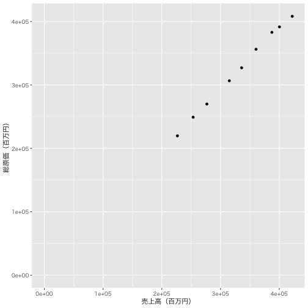
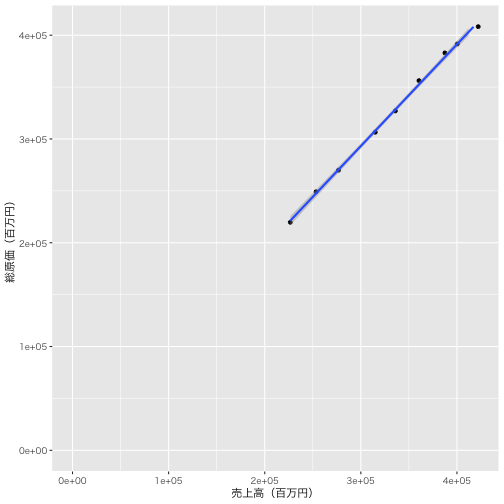

電卓のように使うこともできる
1 + 2
[1] 3
5 - 10
[1] -5
3 * 8
[1] 24
1 / 2
[1] 0.5
Taichi Kimura
電卓のように使うこともできる
1 + 2
[1] 3
5 - 10
[1] -5
3 * 8
[1] 24
1 / 2
[1] 0.5
べき乗
4 ^ 3
[1] 64
平方根
sqrt(2)
[1] 1.414214
自然対数
log(2)
[1] 0.6931472
c()という関数で，ベクトルを作成できる．
c(1,3,5)というベクトルの各要素に1を足すという計算は，次のコマンドで実行できる．
c(1,3,5) + 1
[1] 2 4 6
変数の作成もできる． 変数名は自由だが，数字から始まっていたり，Rがはじめから用意している関数と同じ名前はつけられない．
a <- 2
b <- 5
とすると，aという変数に2，bという変数に5が代入されたことになる．
変数を使って計算もできる．
a + b
[1] 7
a - b
[1] -3
a * b
[1] 10
a / b
[1] 0.4
変数にベクトルを代入することもできる．
revenue <- c(150, 220, 180, 330, 270, 300)
cost <- c(120, 180, 140, 220, 110, 100)
profit <- revenue - cost
profit
[1] 30 40 40 110 160 200
平均を知りたい場合はmean()関数，中央値を知りたい場合はmedian()関数を使うことができる．
mean(revenue)
[1] 241.6667
median(revenue)
[1] 245
関数に()の中で指定されるものを引数と呼ぶが，Rの関数には複数の引数を取るものがある．
たとえば，2以上20以下の偶数の数列は，次のようにつくることができる．
seq(from = 2, to = 20, by = 2)
[1] 2 4 6 8 10 12 14 16 18 20
どのような関数なのか知りたい場合は，ヘルプを利用できる．
次のように?関数名とコンソールに入力すると，ヘルプが表示される．
?seq
Rには，統計分析でよく使われる基本的な関数が予め用意されている．
ただし，「何でもある」わけではないので，function()関数を使って自分で関数を作成することもできる．
たとえば，最大値を求めるmax()関数と最小値を求めるmin()関数の結果を並べて表示したい場合には，次のような関数を作成すればよい．
mm <- function(x){
c(min(x), max(x))
}
これで，引数xの最大値と最小値を並べて表示するmm()関数が完成した．
mm(revenue)
[1] 150 330
Rでは，必要な機能（関数）を自分で追加できるという大きな強みがある．
ただし，必要な機能をすべて自分で作成しようとすると厖大な時間がかかってしまう．
そんな場合には，他のひとが作成した関数を利用させてもらうこともできる．
便利な関数をまとめたものをパッケージと良い，世界中の多くのRユーザがパッケージを作成・公開している．
install.packages()関数を利用するか，あるいはRStudioのPackagesタブからインストールすることもできる．
データ分析では，CSV形式のデータを利用することが多い．
したがって，ここではまずCSV形式のデータを読み込む方法を解説する．
今日は，eolというデータベースからダウンロードしてきた，ASKULの9年分（2013年〜2021年）の要約損益計算書データを利用する．
askul <- readr::read_csv("askul.csv", col_names = FALSE)
## Rows: 26 Columns: 10
## ─ Column specification ─────────────────────────────────────────────────────────────
## Delimiter: ","
## chr (10): X1, X2, X3, X4, X5, X6, X7, X8, X9, X10
##
## ℹ Use `spec()` to retrieve the full column specification for this data.
## ℹ Specify the column types or set `show_col_types = FALSE` to quiet this message.
csvデータの1列目が変数名になっているようなデータであれば，col_names = FALSEの指定は不要．eolからダウンロードしたデータは，そのようなきれいな形になっていないので，「1列目は変数名ではありませんよ」と指定してあげる必要がある．
Excelデータであればreadxl::read_excel("foo.xlsx")，Stataデータであればhaven::read_dta("foo.dta")で読み込める．
View(askul)でデータの全体像を確認できる．
head()関数で先頭6行を表示することができる．
head(askul)
## # A tibble: 6 × 10
## X1 X2 X3 X4 X5 X6 X7 X8 X9 X10
## <chr> <chr> <chr> <chr> <chr> <chr> <chr> <chr> <chr> <chr>
## 1 証券コード 2678 2678 2678 2678 2678 2678 2678 2678 2678
## 2 EDINETコード E03363 E03363 E03363 E03363 E03363 E03363 E03363 E03363 E03363
## 3 企業名 アスクル㈱ アスクル㈱ アスクル㈱ アスクル㈱ アスクル㈱ アスクル㈱ アスクル㈱ アスクル㈱ アスクル㈱
## 4 開示書類 有価証券報告書 有価証券報告書 有価証券報告書 有価証券報告書 有価証券報告書 有価証券報告書 有価証券報告書 有価証券報告書 有価証券報…
## 5 決算日 2021/05/20 2020/05/20 2019/05/20 2018/05/20 2017/05/20 2016/05/20 2015/05/20 2014/05/20 2013/05/20
## 6 提出日 2021/07/30 2020/08/07 2019/07/26 2018/07/27 2017/07/28 2016/07/29 2015/07/31 2014/07/31 2013/07/31
また，dplyr::glimpse()でも同様の作業を実施可能．
library(dplyr)
glimpse(askul)
## Rows: 26
## Columns: 10
## $ X1 <chr> "証券コード", "EDINETコード", "企業名", "開示書類", "決算日", "提出日", "訂正日", "連結－要約損益（及び包括利益）計算書", "売上高・…
## $ X2 <chr> "2678", "E03363", "アスクル㈱", "有価証券報告書", "2021/05/20", "2021/07/30", "--", NA, "422151", "317769", "104378", "104381", "904…
## $ X3 <chr> "2678", "E03363", "アスクル㈱", "有価証券報告書", "2020/05/20", "2020/08/07", "--", NA, "400376", "304692", "95683", "95683", "86862…
## $ X4 <chr> "2678", "E03363", "アスクル㈱", "有価証券報告書", "2019/05/20", "2019/07/26", "--", NA, "387470", "295877", "91606", "91593", "87085…
## $ X5 <chr> "2678", "E03363", "アスクル㈱", "有価証券報告書", "2018/05/20", "2018/07/27", "--", NA, "360445", "274918", "85515", "85526", "81323…
## $ X6 <chr> "2678", "E03363", "アスクル㈱", "有価証券報告書", "2017/05/20", "2017/07/28", "--", NA, "335914", "259160", "76755", "76754", "67890…
## $ X7 <chr> "2678", "E03363", "アスクル㈱", "有価証券報告書", "2016/05/20", "2016/07/29", "--", NA, "315024", "244690", "70328", "70333", "61810…
## $ X8 <chr> "2678", "E03363", "アスクル㈱", "有価証券報告書", "2015/05/20", "2015/07/31", "--", NA, "276759", "215948", "60814", "60810", "53965…
## $ X9 <chr> "2678", "E03363", "アスクル㈱", "有価証券報告書", "2014/05/20", "2014/07/31", "--", NA, "253408", "197704", "55701", "55703", "51425…
## $ X10 <chr> "2678", "E03363", "アスクル㈱", "有価証券報告書", "2013/05/20", "2013/07/31", "--", NA, "226610", "175988", "50613", "50622", "43733…
データを確認する際に重要なのは，データの型．
| 種類 | 内容 |
|---|---|
| numeric | 実数値データ |
| character | 文字列データ |
| factor | 因子データ（カテゴリカル・データを扱うときなどに用いられる） |
| logical | TRUEかFALSEか |
今回のデータはすべて<chr>．つまり，文字列型のデータとしてRに認識されていることがわかる．本来，売上高などのデータはnumeric型で認識したいので，後で型を修正する．
x <- c(1,2,3)
x*2
## [1] 2 4 6
xc <- as.character(x) #文字列型に変換
xc*2
## Error in xc * 2: 二項演算子の引数が数値ではありません
このように，文字列型だと演算できない場合がある．
読み込みデータに問題がなければ，分析用のデータを作成する．
Rは，基本的に各列で変数を表現するが，現在のデータでは各行が変数になってしまっている．そのため，まずはデータの縦横を入れ替えたい．データの縦横入れ替えはt()関数でできる．
askul_t <- t(askul)
askul_t <- data.frame(askul_t)
head(askul_t)
## X1 X2 X3 X4 X5 X6 X7 X8
## X1 証券コード EDINETコード 企業名 開示書類 決算日 提出日 訂正日 連結－要約損益（及び包括利益）計算書
## X2 2678 E03363 アスクル㈱ 有価証券報告書 2021/05/20 2021/07/30 -- <NA>
## X3 2678 E03363 アスクル㈱ 有価証券報告書 2020/05/20 2020/08/07 -- <NA>
## X4 2678 E03363 アスクル㈱ 有価証券報告書 2019/05/20 2019/07/26 -- <NA>
## X5 2678 E03363 アスクル㈱ 有価証券報告書 2018/05/20 2018/07/27 -- <NA>
## X6 2678 E03363 アスクル㈱ 有価証券報告書 2017/05/20 2017/07/28 -- <NA>
## X9 X10 X11 X12 X13
## X1 売上高・営業収益・経常収益等[百万円] 売上原価[百万円] 差引売上総利益[百万円] 売上総利益[百万円] 販売費及び一般管理費・その他営業費用[百万円]
## X2 422151 317769 104378 104381 90455
## X3 400376 304692 95683 95683 86862
## X4 387470 295877 91606 91593 87085
## X5 360445 274918 85515 85526 81323
## X6 335914 259160 76755 76754 67890
## X14 X15 X16 X17 X18 X19 X20
## X1 営業利益[百万円] 営業外収益[百万円] 営業外費用[百万円] 経常利益[百万円] 特別利益[百万円] 特別損失[百万円] 税引前当期純利益[百万円]
## X2 13923 348 421 13850 8 2582 11277
## X3 8821 440 606 8656 2 197 8460
## X4 4520 324 426 4418 36 3281 1173
## X5 4192 184 436 3940 11497 7028 8409
## X6 8865 186 184 8866 4946 11643 2169
## X21 X22 X23
## X1 法人税等[百万円] 当期純利益\r\n[百万円] 非支配株主に帰属する当期純利益\r\n[百万円]
## X2 3520 7756 -1
## X3 2750 5709 56
## X4 677 496 62
## X5 3707 4702 8
## X6 1120 1049 34
## X24 X25 X26
## X1 （連）親会社株主に帰属する当期純利益／（単）当期純利益\r\n[百万円] その他の包括利益[百万円] 包括利益[百万円]
## X2 7758 -15 7740
## X3 5652 11 5720
## X4 434 -19 477
## X5 4693 32 4735
## X6 1014 26 1076
縦横入れ替えができたら，次に1行目を変数名として認識させたい（現状では，1行目も2行目以降と同様のデータとして扱われている）．
列名の設定は，colnames()でできる．手順としては，
x <- askul_t[1,] #askul_t[1,]でaskul_tの1行目のデータを持ってくる．
colnames(askul_t) <- x #まとめてcolnames(askul_t) <- askul_t[1,]でOK．
head(askul_t)
## 証券コード EDINETコード 企業名 開示書類 決算日 提出日 訂正日 連結－要約損益（及び包括利益）計算書
## X1 証券コード EDINETコード 企業名 開示書類 決算日 提出日 訂正日 連結－要約損益（及び包括利益）計算書
## X2 2678 E03363 アスクル㈱ 有価証券報告書 2021/05/20 2021/07/30 -- <NA>
## X3 2678 E03363 アスクル㈱ 有価証券報告書 2020/05/20 2020/08/07 -- <NA>
## X4 2678 E03363 アスクル㈱ 有価証券報告書 2019/05/20 2019/07/26 -- <NA>
## X5 2678 E03363 アスクル㈱ 有価証券報告書 2018/05/20 2018/07/27 -- <NA>
## X6 2678 E03363 アスクル㈱ 有価証券報告書 2017/05/20 2017/07/28 -- <NA>
## 売上高・営業収益・経常収益等[百万円] 売上原価[百万円] 差引売上総利益[百万円] 売上総利益[百万円] 販売費及び一般管理費・その他営業費用[百万円]
## X1 売上高・営業収益・経常収益等[百万円] 売上原価[百万円] 差引売上総利益[百万円] 売上総利益[百万円] 販売費及び一般管理費・その他営業費用[百万円]
## X2 422151 317769 104378 104381 90455
## X3 400376 304692 95683 95683 86862
## X4 387470 295877 91606 91593 87085
## X5 360445 274918 85515 85526 81323
## X6 335914 259160 76755 76754 67890
## 営業利益[百万円] 営業外収益[百万円] 営業外費用[百万円] 経常利益[百万円] 特別利益[百万円] 特別損失[百万円] 税引前当期純利益[百万円]
## X1 営業利益[百万円] 営業外収益[百万円] 営業外費用[百万円] 経常利益[百万円] 特別利益[百万円] 特別損失[百万円] 税引前当期純利益[百万円]
## X2 13923 348 421 13850 8 2582 11277
## X3 8821 440 606 8656 2 197 8460
## X4 4520 324 426 4418 36 3281 1173
## X5 4192 184 436 3940 11497 7028 8409
## X6 8865 186 184 8866 4946 11643 2169
## 法人税等[百万円] 当期純利益\r\n[百万円] 非支配株主に帰属する当期純利益\r\n[百万円]
## X1 法人税等[百万円] 当期純利益\r\n[百万円] 非支配株主に帰属する当期純利益\r\n[百万円]
## X2 3520 7756 -1
## X3 2750 5709 56
## X4 677 496 62
## X5 3707 4702 8
## X6 1120 1049 34
## （連）親会社株主に帰属する当期純利益／（単）当期純利益\r\n[百万円] その他の包括利益[百万円] 包括利益[百万円]
## X1 （連）親会社株主に帰属する当期純利益／（単）当期純利益\r\n[百万円] その他の包括利益[百万円] 包括利益[百万円]
## X2 7758 -15 7740
## X3 5652 11 5720
## X4 434 -19 477
## X5 4693 32 4735
## X6 1014 26 1076
つづき．
askul_t <- askul_t %>% slice(-1)
head(askul_t)
## 証券コード EDINETコード 企業名 開示書類 決算日 提出日 訂正日 連結－要約損益（及び包括利益）計算書
## X2 2678 E03363 アスクル㈱ 有価証券報告書 2021/05/20 2021/07/30 -- <NA>
## X3 2678 E03363 アスクル㈱ 有価証券報告書 2020/05/20 2020/08/07 -- <NA>
## X4 2678 E03363 アスクル㈱ 有価証券報告書 2019/05/20 2019/07/26 -- <NA>
## X5 2678 E03363 アスクル㈱ 有価証券報告書 2018/05/20 2018/07/27 -- <NA>
## X6 2678 E03363 アスクル㈱ 有価証券報告書 2017/05/20 2017/07/28 -- <NA>
## X7 2678 E03363 アスクル㈱ 有価証券報告書 2016/05/20 2016/07/29 -- <NA>
## 売上高・営業収益・経常収益等[百万円] 売上原価[百万円] 差引売上総利益[百万円] 売上総利益[百万円] 販売費及び一般管理費・その他営業費用[百万円]
## X2 422151 317769 104378 104381 90455
## X3 400376 304692 95683 95683 86862
## X4 387470 295877 91606 91593 87085
## X5 360445 274918 85515 85526 81323
## X6 335914 259160 76755 76754 67890
## X7 315024 244690 70328 70333 61810
## 営業利益[百万円] 営業外収益[百万円] 営業外費用[百万円] 経常利益[百万円] 特別利益[百万円] 特別損失[百万円] 税引前当期純利益[百万円]
## X2 13923 348 421 13850 8 2582 11277
## X3 8821 440 606 8656 2 197 8460
## X4 4520 324 426 4418 36 3281 1173
## X5 4192 184 436 3940 11497 7028 8409
## X6 8865 186 184 8866 4946 11643 2169
## X7 8517 237 180 8574 1855 1859 8569
## 法人税等[百万円] 当期純利益\r\n[百万円] 非支配株主に帰属する当期純利益\r\n[百万円]
## X2 3520 7756 -1
## X3 2750 5709 56
## X4 677 496 62
## X5 3707 4702 8
## X6 1120 1049 34
## X7 3388 5181 -74
## （連）親会社株主に帰属する当期純利益／（単）当期純利益\r\n[百万円] その他の包括利益[百万円] 包括利益[百万円]
## X2 7758 -15 7740
## X3 5652 11 5720
## X4 434 -19 477
## X5 4693 32 4735
## X6 1014 26 1076
## X7 5255 -304 4876
dplyr::slice()`は，特定の行を切り出す関数．
たとえば，以下のように書くと，売上高が最大だった年のデータだけを取り出すこともできる．
maxrev <- askul_t %>% slice(which.max(`売上高・営業収益・経常収益等[百万円]`))
さらに，引数にマイナスをつけると，今回のように特定の行を削除できる．
%>%はパイプ演算子と呼ばれるもので，magrittrパッケージに含まれている（dplyrを読み込めば自動的にmagrittrも読み込まれる）．
パイプ演算子の基本は，演算子（%>%）の左側の処理結果を，演算子の右側の関数の第1引数として利用するということ．
練習のため，東証一部上場企業のうち3月決算の小売企業50社の過去5年間の営業利益に関するデータであるkouri.csvデータを利用する．なお，Cosは売上原価，GPは粗利益，SGAは販管費，OIは営業利益を示している．
#データ整形
kouri <- readr::read_csv("kouri.csv")
kouri[,3:7] <- data.frame(lapply(kouri[,3:7], as.numeric)) #型変換．後で説明．
kouri[,2] <- data.frame(lapply(kouri[,2],as.Date))
kouri.csvデータから，2017年3月31日決算のデータだけを抜きだし，営業利益順に並べ替え，第1位から順位をつけ，売上高が50,000百万円以下のデータを除外する，という処理を一気に実行したいとする．
パイプ演算子なしだと，と入れ子で書けばできなくはない…が，読みづらいし，ミスも起きやすい．
X <- filter(
mutate(
arrange(
filter(kouri, year=="2017-03-31"),
desc(OI)),
order = 1:n()),
Revenue > 50000)
パイプ演算子ありなら，以下のように，処理したい順番に直感的に書くことができる．
X <- kouri %>%
filter(year == "2017-03-31") %>%
arrange(desc(OI)) %>%
mutate(order = 1:n()) %>%
filter(Revenue > 50000)
X
数字のデータもcharacter型になっているので，これをnumeric型に戻す．
numeric型への変換は，as.numeric()でできる．たとえば，
askul_t[,9] <- as.numeric(askul_t[,9])
と書けば，askul_tの9列目を数値型に変換できる．askul_tは9から26列目が本来数字のデータなので，これをあと17回繰り返せば処理できなくはない（が，めんどくさい）．
同じ関数処理を繰り返したい場合はlapply()関数を用いると便利．lapply(X,Y)で，Xの範囲に対して，Yという処理を繰り返す．よって，今回の場合は，以下のように書けば一括処理してくれる．
askul_t[,9:26] <- lapply(askul_t[,9:26], as.numeric)
固変分解にあたっては，総原価（=売上原価+販管費）のデータが必要なので，askul_tデータに総原価列を追加する．
列追加はmutate()関数でできる．
今回の場合は，売上原価と販管費の和の列をつくりたいので，以下のように書く．
askul_t <- mutate(askul_t,
総原価 = askul_t$`売上原価[百万円]`+askul_t$`販売費及び一般管理費・その他営業費用[百万円]`)
ここまででデータの前処理は終了．いよいよ，固変分解を実施する．
……が，その前に，データを可視化してみる．
いきなり分析をするのではなくて，散布図などをつくってみて，データの様子を観察することも重要．
今日はggplot2パッケージを用いて，見やすいグラフづくりを行う．
回帰分析法による固変分解は，総原価 = 固定費 + 変動費 × 売上高という関係を想定する．
したがって，横軸に売上高，縦軸に総原価をとった散布図を書いてみる．
library(ggplot2)
g <- ggplot(data = askul_t,
mapping = aes(x = `売上高・営業収益・経常収益等[百万円]`, y = 総原価))
g <- g + xlab("売上高（百万円）") + ylab("総原価（百万円）")
g <- g + theme_gray (base_family = "HiraKakuPro-W3") #（macのみ）日本語の文字化け防止．
g <- g + geom_point()
g <- g + xlim(0, max(askul_t$`売上高・営業収益・経常収益等[百万円]`))
g <- g + ylim(0, max(askul_t$総原価))
まず1行目で，askul_tデータを使いますと指定．
2行目：x軸とy軸のラベルを設定．
4行目：散布図を書くことを指定．
5，6行目：軸の範囲を指定（0から売上高，総原価の最大値まで）
plot(g)

g <- g + geom_smooth(method = "lm", formula = y ~ x) #回帰直線の追加
plot(g)
## Warning: Removed 2 rows containing missing values (geom_smooth).

ggplot2`を使えば，他にもヒストグラムや箱ひげ図なども作成可能．
回帰分析で固変分解をしてみる．
result <- lm(askul_t$総原価 ~ askul_t$`売上高・営業収益・経常収益等[百万円]`)
summary(result)
##
## Call:
## lm(formula = askul_t$総原価 ~ askul_t$`売上高・営業収益・経常収益等[百万円]`)
##
## Residuals:
## Min 1Q Median 3Q Max
## -4661.5 -1414.4 -506.5 1590.6 4059.6
##
## Coefficients:
## Estimate Std. Error t value Pr(>|t|)
## (Intercept) -769.72567 5185.07457 -0.148 0.886
## askul_t$`売上高・営業収益・経常収益等[百万円]` 0.97987 0.01538 63.708 6.17e-11 ***
## ---
## Signif. codes: 0 '***' 0.001 '**' 0.01 '*' 0.05 '.' 0.1 ' ' 1
##
## Residual standard error: 2971 on 7 degrees of freedom
## Multiple R-squared: 0.9983, Adjusted R-squared: 0.998
## F-statistic: 4059 on 1 and 7 DF, p-value: 6.167e-11
(Intercept)が固定費部分で，askul_t$売上高・営業収益・経常収益等[百万円]が変動費率．
アスクルのデータでは，負の固定費が推定されてしまうし，変動費率も高すぎるように思われる．
外部公表データだけを使って固変分解をするのは，結構不正確（特に固定費の推定値は信頼できない）．
モデルに改良の余地がないわけではない．
負の固定費の原因は自由裁量固定費（売上高や利益に変動して金額が変動する固定費）であると言われている．
何らかの方法で自由裁量固定費を外部公表データのみから推定できれば，有用性が高まる可能性はある．
企業内部であれば，自由裁量固定費を推計することも可能（たとえば，福嶋・新井・松尾 (2014) 「自由裁量費のコスト・ビヘイビアがCVP分析に与える影響：回帰分析による固定費推定の問題」『会計プログレス』15: 26-37）．
できるだけ分析単位を小さくして，自由裁量固定費に十分留意すれば，勘定科目法ほどには手間をかけずに固変分解をすることも可能．
負の固定費が推計されるであろう企業と，正の固定費が推計されるであろう企業の特徴を考察し，どのような特徴を持った企業であれば負の固定費が推計されると考えられるか，仮説を提示しなさい．
1の考察を踏まえて，東証1部上場企業から正の固定費が推計されるであろう企業を5社，負の固定費が推計されるであろう企業を5社選び，過去5年間（2016〜2020年度）のデータを用いて，Rで回帰分析法による固変分解を行い，その結果を報告しなさい．仮に1の予想に反する結果が出た場合は，その理由も考察しなさい（予想が外れていたことは減点要因にはなりません）．
レポートは3人以内のグループで作成しても良い．また，レポートにはRのソースコードを必ず添付すること．
A4用紙に5枚以内．6枚目以降は採点対象としない．
締め切りは10月14日（木）の23:59．
締め切りを10分超過するごとに5点減点するので，時間通りに提出すること（急にパソコンが壊れた，提出先のメールアドレスを間違えたなどは遅れる理由とは認めません）．
入院など，特別な事情がある場合は早めに相談してください．